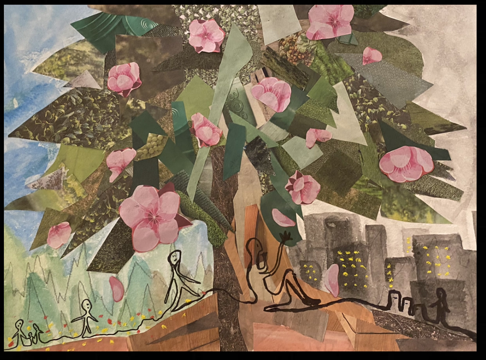

Project 4
Katarina, Andy, Renea, Katarina (representing Seth)
Phase 1 - Katarina
Phase 2 - Andy
Blossoms in Transition
Beginning life in a world of blues and greens
Pulled into a future of all our hopes and dreams
Pink flowers fall from a paper tree
I think they’re trying to talk to me
Blossoms in transition
Feeling the joy of life
We’re just temporary shadows
Still pretending we’ve got choice
Sky light and grey over city dreams
I’m laying low, it’s not what it seems
Pink flowers fall from a paper tree
I think they’re trying to talk to me
Blossoms in transition
Beauty in the change
We’re just temporary shadows
In a life that’s soft and strange